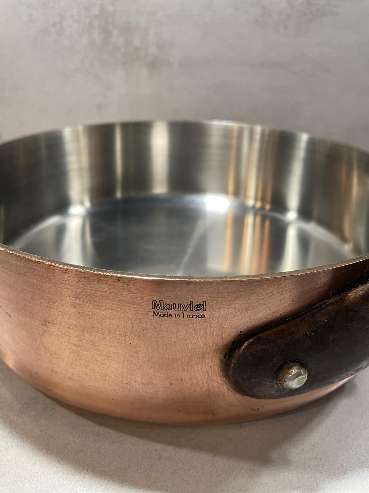
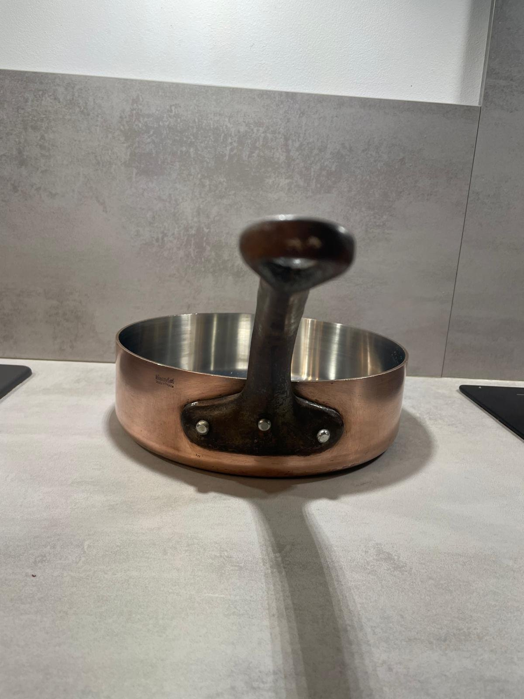
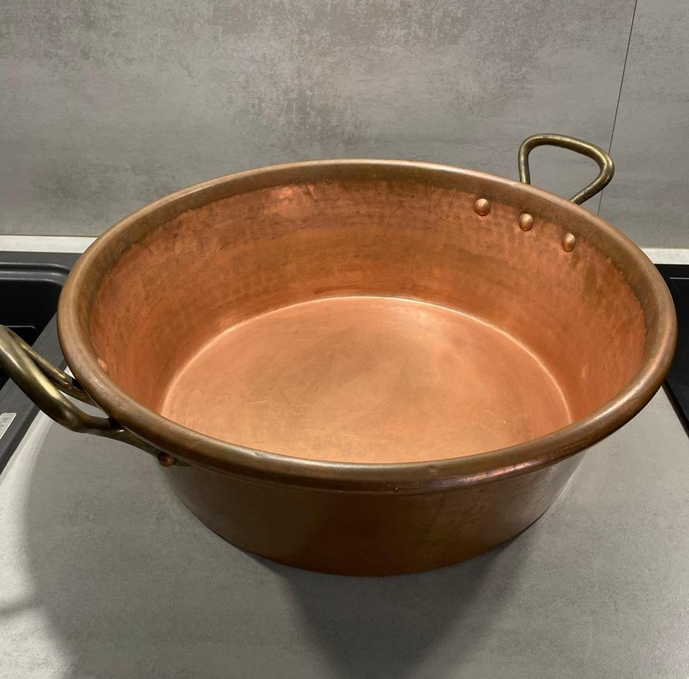
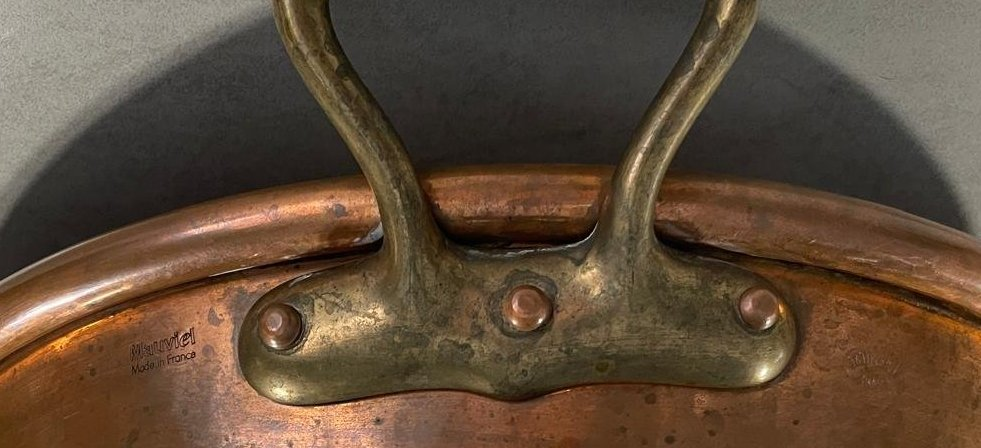

Mauviel · Collector’s Guide
Mauviel Vintage Copper Cookware: Marks, Construction & Identification
Mauviel is the most thoroughly documented of the Villedieu-les-Poêles copper workshops, which makes a Mauviel mark unusually informative — and makes it unusually tempting to read more into it than it says. This guide works through what the mark establishes, what the company’s own documented history does and does not allow us to infer, and how a second name on the same object changes the question. It draws on pieces previously sourced and examined by Cook & Collect, and forms part of our wider guide to vintage French copper cookware.
Mauviel and Villedieu-les-Poêles
Mauviel’s own published history states that Ernest Mauviel established his workshop at Villedieu-les-Poêles, in Normandy, in 1830, and that the house has remained in the same family across seven generations, still manufacturing in the town today. The same company timeline records a move to a larger production unit in 1965, a first bilaminated copper line combining 90% copper with 10% stainless steel in 1989, and multi-ply stainless steel developed for induction in 1995.
For a collector, the value of that timeline is that it is documented and dated by the manufacturer. It provides genuine reference points — for instance, a copper-and-stainless bilaminated construction belongs to the company’s later product history rather than to its nineteenth-century output — while saying nothing about any individual unmarked pan. It is historical context, not a dating key.
Reading a Mauviel mark
A Mauviel mark names the manufacturer. That is more than most French copper offers, and it is worth being precise about how much further it takes us: not to a date, not to a gauge, not to a lining specification, and not to a product line. Those are separate questions answered by measurement and documentation, not by the presence of a name.
We photograph marks closely and transcribe them exactly as they appear, including their position on the object and whether they are stamped, engraved or printed. Where a mark sits alongside a country-of-origin stamp, we record the two as separate pieces of information.

A Mauviel mark on an archive sauté pan
This copper sauté pan (sauteuse), previously sourced by Cook & Collect, carries a visible “Mauviel / Made in France” mark. That is a firm piece of evidence: it identifies the maker, and it places manufacture in France. It is the clearest kind of identification a French copper pan can offer, and it is exactly why we photograph marks close up.
Collector’s note
A Mauviel mark identifies the maker. It does not, by itself, establish the date, the copper thickness, the lining or the collection to which a piece belonged. We have not assigned any of those to this pan, and we will only do so if the object is measured and the specification documented.


The objects in this guide have passed through our hands and are recorded here as research, not as stock. They are no longer available.
“Made in France” on a Mauviel piece
On the archive piece, a “Made in France” stamp appears together with the maker’s name. The two do different work: one identifies who made the object, the other where it was made. Neither is a date. Country-of-origin marking practice changed over time and across export markets, and that is an area where we would want documentary evidence before drawing any chronological conclusion — so we draw none.
Collector’s note
A country-of-origin mark is not a dating mark. We have not established a Mauviel marking chronology, and we do not use the presence or wording of “Made in France” to place a piece in a period.
Construction: what we can say, and what we measure
Mauviel copper has been made in a wide range of gauges, forms and linings, and the company’s own timeline shows the material vocabulary changing over time — bilaminated copper and stainless steel from 1989, multi-ply stainless for induction from 1995. That documented sequence is useful in one direction only: a construction the company introduced at a given date cannot belong to an earlier period. It does not work in reverse, and it says nothing about where within a long period an ordinary tinned copper piece belongs.
For the pieces in our archive we therefore record what we can measure — form, dimensions, handle material and fixing, rivet arrangement, the state of the interior — and we do not state a copper thickness, a lining specification or a product line unless the object has been measured or a document supports it.
Maker, Retailer and Attribution
French copper marks reward careful reading because the names on an object can play different roles. A name may belong to the workshop that raised and finished the piece, to the house that commissioned or supplied it, to a trademark, or to a retailer whose clientele it was made for. These roles overlap in practice — E. Dehillerin’s own history describes a house that supplied professional kitchens and also ran its own boilermaking and tinning workshops — so “maker” and “retailer” cannot be treated as interchangeable labels, nor as mutually exclusive ones.
The practical consequence is a discipline about wording. We record which name appears, where it appears, and how it is applied — stamped, engraved, printed on a label — and we describe the relationship between those names only when documentation supports it. Two names on one object are a research question, not a conclusion.
Case study: a confiturier carrying Mauviel and E. Dehillerin references
A confiturier — the wide, shallow preserving pan used for jam — sourced by Cook & Collect carries references to both Mauviel and E. Dehillerin. Two names on one object is the most interesting situation in French copper, and also the one most often resolved too quickly.
The possibilities are not equivalent, and the object alone does not choose between them: a piece made by one house and sold by the other; a piece made for a supplier’s own range; a later addition of a retailer’s mark; or an arrangement we have no record of. Establishing which applies needs documentation — a catalogue, an invoice, a trade record — and we have not located one.

Reading two names on one object
A copper confiturier — a wide, shallow preserving pan — sourced by Cook & Collect is reserved for this section because it raises the maker-and-retailer question directly. The photographs here are our own record of the piece: the vessel with its brass handles and riveted construction, and a close view of its markings. Both names appear on the same face of the vessel, below the rim and either side of a brass handle: the Mauviel / Made in France stamp to one side and the E. Dehillerin stamp to the other, the Dehillerin stamp the less clearly legible of the two. We record that arrangement as an observation; how the two came to be there is a separate question. Its measurements and the precise form of the marks are still being recorded.
Research in progress
No conclusion has been drawn about this object. We are not asserting a manufacturing, supply, licensing or exclusivity arrangement between the two houses, and we are not treating the two marks as establishing a production date or a provenance. Its markings, measurements and construction are still being recorded, and this section will be revised only when documentation supports a statement. It is deliberately empty of history rather than filled with a plausible account.

For how the Dehillerin name itself should be read — supplier, producer, or both — see our guide to E. Dehillerin copper cookware.
Dating vintage Mauviel copper
There is no shortcut. The company’s documented history gives firm anchors for certain constructions and for the manufacture continuing at Villedieu-les-Poêles, but a simplified “mark chronology” of the kind often circulated for collectable cookware would require primary evidence we have not seen: dated catalogues, dated advertisements, or archival records tying specific mark forms to specific years.
Our practice is to describe a Mauviel piece by its maker, its physical evidence and, where the evidence supports it, a broad period — and otherwise to record the date as not established. A date attached to another surviving example is a starting point, not a conclusion.
Research & References
The sources below are those actually consulted for this guide. The company’s own published history is used for documented dates and is described as such; where the evidence stops, the guide stops.
- Mauviel
- The company’s own history and dated timeline, used here for the 1830 foundation by Ernest Mauviel at Villedieu-les-Poêles, the family continuity across seven generations, continued manufacture in Normandy, the 1965 production unit, the 1989 bilaminated copper line (90% copper / 10% stainless steel) and the 1995 multi-ply stainless steel:
- The confiturier
- Research in progress. Its markings, measurements and construction are still being recorded, and no documentary source has been consulted for it. No relationship between the names it carries is asserted in this guide.
Where this fits in our French copper research
Marks are only one layer of evidence. Gauge, weight, handles, rivets, lining, wear and restoration all contribute, and the order in which they are read is what keeps an identification honest. That method, together with the history of the French copper trade and of Villedieu-les-Poêles, is set out in our pillar guide. Read the main guide to vintage French copper cookware.